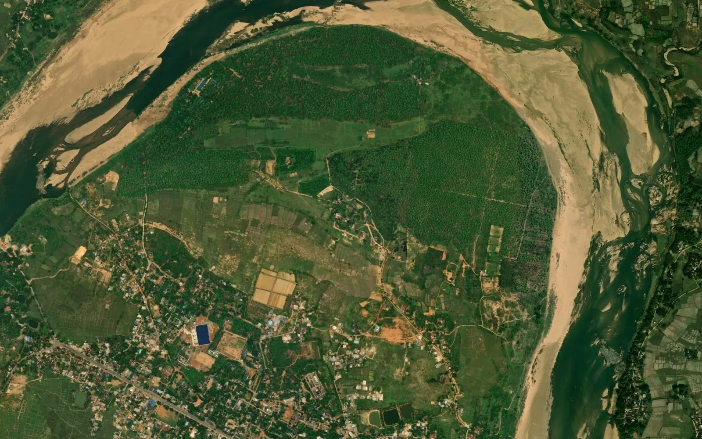

Odisha plot map: how to read the mouza map with khata, plot number and kisam

In Odisha, land is identified by the revenue village (mouza), the khata number and the plot number. The village map shows every plot with its number, and the Record of Rights (RoR) lists, khata by khata, the plots, their area, their land class (kisam) and the recorded holders. This guide explains how to read the two together and what is needed when the plots must be seen on a satellite image or used in a GIS or CAD file.
1. Where the map and the record come from
Odisha land records are kept by the Revenue and Disaster Management Department, with revenue work running through the district, the tahasil, the Revenue Inspector (RI) circle and the mouza. The Record of Rights can be seen on the state's Bhulekh service, and village maps through the state's Bhu-Naksha service. These are official state services and the right place to start for any plot.
2. The terms you will meet
- Mouza: the revenue village, the unit for which one map sheet (or a set of sheets) is drawn.
- Plot number: the number of one parcel on the map, the basic unit of the record.
- Khata number: the holding; one khata can hold many plots, and one RoR page is one khata.
- Record of Rights (RoR / khatiyan): the record that lists the plots of each khata with area, kisam and holders.
- Kisam: the land class of each plot, such as agricultural, homestead or a class of government land.
3. Reading the village map
The mouza map shows plot boundaries with the plot number written inside each parcel, together with roads, canals, nallahs, ponds and the village boundary. Large villages can run over more than one sheet, and the plots near a sheet edge continue on the next sheet. Plot numbers usually run in a continuous series across the village, so a number that looks out of place is worth checking against the record before relying on it.
4. Linking the map to the Record of Rights
Take the plot number from the map, choose the same district, tahasil and mouza in the record, and search by plot number to find the khata it belongs to. The RoR page of that khata then gives the area and kisam of every plot in it. Changes after a sale, inheritance or partition come through mutation, so read the latest record and check for pending cases where a decision depends on it. Many plots also carry sub-division numbers created by later settlement or partition, which must be matched exactly.
5. Area: acres and decimals
Odisha records usually give area in acres and decimals. 100 decimals make 1 acre, so one decimal is about 40.47 square metres and one acre is about 0.405 hectare. Some records also show hectares. Always convert from the recorded value and state the conversion in any land schedule, rather than measuring the area again from a scanned map.
6. Government and common land
Government land in Odisha is recorded under separate khatas and kisam entries, for example land available for settlement, land not available for settlement such as roads, tanks and burial grounds, and common land kept for public use. Because the class is written in the record and not on the map, the map alone cannot tell you which plots are government land. Read the current RoR of each plot and take advice from a revenue professional before relying on it. Our guide on checking government land in a village covers the wider method.
7. Why a viewer map is not yet a GIS map
A map on a portal is good for finding a plot, but it is not a file you can open with GPS points or a project layout. For that, the map must be georeferenced, meaning fitted to real coordinates such as WGS 84 latitude / longitude or UTM metres, and every plot digitized as a closed polygon carrying its number. The result should then be checked on satellite imagery: field bunds, roads and canals visible from above should sit on the plot lines across the whole village, not just at one corner.
8. Common uses
- Seeing a plot on a satellite image in Google Earth
- Listing the plots inside a proposed solar, industrial or warehouse site
- Listing the plots crossed by a road, canal, pipeline or transmission line route
- Preparing a plot-wise land schedule with mouza, khata, area and kisam
9. Limits to keep in mind
The map shows the record as drawn at settlement. Later sub-divisions and new roads may not appear on it, and the maps of neighbouring mouzas do not always agree exactly along their shared edge. A digitized map is a planning base, not proof of title. The revenue record remains the legal source, and where a line decides ownership or compensation, a DGPS or Total Station survey on the ground is the next step.
10. What we deliver
We turn the Odisha mouza map into a georeferenced GIS file: every plot as a numbered polygon, checked against satellite imagery, with the village boundary inside the same files, in KML for Google Earth, DWG / DXF for AutoCAD, SHP for QGIS or ArcGIS and an Excel list of plots and areas. BHU-NETRA Map Service is a private service and is not connected with any state government.
See the Odisha plot map page, check your village with the village checker, read how to measure area on a Bhu-Naksha map and land-record terms of each state, or ask for a quotation.
Need khasra maps or a survey?
Georeferenced and digitized khasra maps in KML, DWG, SHP and Excel for 20 states, plus DGPS, Total Station, topographic and drone surveys. Single village orders welcome.